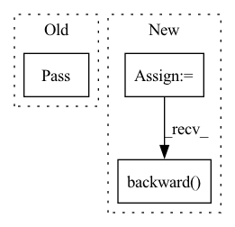

Pattern ID :4734

Before Change
:param args: batches for each view separated by commas
:return:
pass
@abstractmethod
def forward(self, *args):
After Change
loss = closure()
else:
self.optimizer.zero_grad()
loss = self.loss(*args)
loss.backward()
self.optimizer.step()
return loss
@abstractmethod
In pattern: SUPERPATTERN
Frequency: 3
Non-data size: 3
Instances
Fragment ID: 16790713
Project Name: jameschapman19/cca_zoo
Commit Name: d477ccf75a9fdc620ea3641dc46b46ab120f3601
Time: 2021-06-24
Author: james.chapman.19@ucl.ac.uk
File Name: cca_zoo/deepmodels/_dcca_base.py
M Class Name: _DCCA_base
N Class Name: _DCCA_base
M Method Name: update_weights(1)
N Method Name: update_weights(1)
M Parent Class: torch.nn.Module
N Parent Class: torch.nn.Module
M File Name: cca_zoo/deepmodels/_dcca_base.py
N File Name: cca_zoo/deepmodels/_dcca_base.py
M Start Line: 19
M End Line: 19
N Start Line: 19
N End Line: 33
'>
Before Change
self.main_loop()
def step(self, current_state):
pass
After Change
self.optimizer.zero_grad()
loss = self.model.full_loss(self.current_state)
loss.backward()
self.loss_history.append(loss.detach().cpu().item())
self.lambda_history.append(np.copy(self.current_state.detach().cpu().numpy()))
if self.verbose > 0:
'>
Fragment ID: 16790714
Project Name: connorstoneastro/autoprof
Commit Name: 63fc675c57f587dac88f55c55ee7e3f5749ad76d
Time: 2022-11-30
Author: connorstone628@gmail.com
File Name: autoprof/fit/gradient.py
M Class Name: Grad
N Class Name: Grad
M Method Name: step(1)
N Method Name: step(2)
M Parent Class: BaseOptimizer
N Parent Class: object
M File Name: autoprof/fit/gradient.py
N File Name: autoprof/fit/gradient.py
M Start Line: 17
M End Line: 18
N Start Line: 41
N End Line: 55
'>
Before Change
@staticmethod
def start(self):
pass
After Change
self.optimizer.zero_grad()
outputs = graph_encoder.forward(graph)
loss = self.loss_function(outputs, graph.node_features)
loss.backward()
self.optimizer.step()
running_loss += loss.item()
print("[%d] loss: %.3f" % (epoch + 1, running_loss))
'>
Fragment ID: 16790715
Project Name: kovanostra/message-passing-neural-network
Commit Name: 006d64407b4a9ec5703e3b59ab2cd7c25bf6455b
Time: 2020-03-24
Author: kovanostra@gmail.com
File Name: src/usecase/train.py
M Class Name: Train
N Class Name: Train
M Method Name: start(1)
N Method Name: start(1)
M Parent Class:
N Parent Class:
M File Name: src/usecase/train.py
N File Name: src/usecase/train.py
M Start Line: 9
M End Line: 9
N Start Line: 15
N End Line: 35